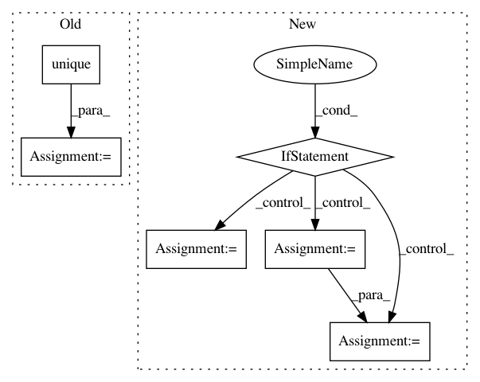

1dba0aaea818505ac4e22cd779995b46454207bb,cnvlib/segmentation/__init__.py,,do_segmentation,#Any#Any#Any#Any#Any#Any#Any#Any#Any#,19
Before Change
skip_low, skip_outliers,
save_dataframe, rlibpath)
chroms = cnarr.chromosome.unique()
rets = []
// TODO: handle save_dataframe=True
with futures.ProcessPoolExecutor(processes) as pool:
for ret in pool.map(_ds, ((cnarr[cnarr.chromosome == c], method,
After Change
rets = list(pool.map(_ds, ((ca, method,
threshold, variants, skip_low, skip_outliers,
save_dataframe, rlibpath) for _, ca in cnarr.by_chromosome())))
if save_dataframe:
rstr = [rets[0][1]]
for ret in rets[1:]:
r = ret[1]
rstr.append(r[r.index("\n") + 1:])
rets = [ret[0] for ret in rets]
data = pd.concat([r.data for r in rets])
meta = rets[0].meta
for r in rets[1:]:
meta.update(r.meta)
In pattern: SUPERPATTERN
Frequency: 5
Non-data size: 6
Instances
Project Name: etal/cnvkit
Commit Name: 1dba0aaea818505ac4e22cd779995b46454207bb
Time: 2016-08-30
Author: bpederse@gmail.com
File Name: cnvlib/segmentation/__init__.py
Class Name:
Method Name: do_segmentation
Project Name: datascienceinc/Skater
Commit Name: 5fe98231a26e08d81f9684a681af43bc2fb2b847
Time: 2017-03-16
Author: aikramer2@gmail.com
File Name: pyinterpret/model/model.py
Class Name: Model
Method Name: check_output_signature
Project Name: rtavenar/tslearn
Commit Name: 798f945eadec05362ce8687cc83793fc8eab4d73
Time: 2019-08-20
Author: romain.tavenard@univ-rennes2.fr
File Name: tslearn/svm.py
Class Name: TimeSeriesSVR
Method Name: fit
Project Name: datascienceinc/Skater
Commit Name: e8b2e17f4eec658f6a6d53486dbbe3eac48bb0fa
Time: 2017-03-30
Author: aikramer2@gmail.com
File Name: pyinterpret/core/global_interpretation/partial_dependence.py
Class Name: PartialDependence
Method Name: _plot_2d_2_binary_feature
Project Name: has2k1/plotnine
Commit Name: 8afc45fa9c6d70f74ce140ef1d1347a33099b8d6
Time: 2016-07-20
Author: has2k1@gmail.com
File Name: ggplotx/positions/position_jitterdodge.py
Class Name: position_jitterdodge
Method Name: setup_params